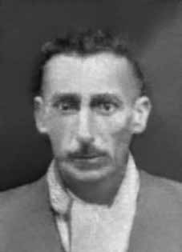

Avelmar
Moreira
de Barros
CIRCUNSTÂNCIAS DA MORTE
Segundo registros da imprensa da época, anexados ao relatório da CEMDP, Avelmar Moreira de Barros teria sido preso após “batida” que procurava esclarecer o assalto praticado contra a agência do Banco do Brasil e levado para o prédio do DOPS em Porto Alegre, no dia 22 de março de 1970.
De acordo com a versão oficial, o agricultor teria cometido suicídio dois dias após a sua prisão, usando lâmina de barbear. A necropsia, realizada pelo Instituto Médico Legal (IML), descreve ferimentos no rosto e nos punhos, além de corte da carótida. Entretanto, o “Dossiê Ditadura: Mortos e desaparecidos políticos no Brasil (1964-1985)” registrou que, ainda em 1974, o boletim da Anistia Internacional denunciava que a morte do agricultor teria ocorrido em decorrência de torturas sofridas na prisão.
A decisão da CEMDP acolheu o pedido e deferiu o caso por unanimidade, no entanto, os integrantes Suzana Keniger Lisbôa, Nilmário Miranda e Luís Francisco Carvalho Filho fizeram constar formalmente no documento a desconfiança em relação à versão de suicídio.
According to press records at the time, attached to the CEMDP report, Avelmar Moreira de Barros was arrested after a “raid” that sought to clarify the robbery carried out against the Banco do Brasil branch and taken to the DOPS building in Porto Alegre, on March 22, 1970.
According to the official version, the farmer committed suicide two days after his arrest, using a razor blade. The autopsy, carried out by the Legal Medical Institute (IML), describes injuries to the face and wrists, as well as a cut to the carotid artery. However, the “Dictatorship Dossier: Political Deaths and Disappearances in Brazil (1964-1985)” recorded that, still in 1974, the Amnesty International bulletin reported that the farmer's death had occurred as a result of torture suffered in prison.
The CEMDP decision accepted the request and approved the case unanimously, however, members Suzana Keniger Lisbôa, Nilmário Miranda and Luís Francisco Carvalho Filho formally stated in the document their distrust regarding the suicide version.
Según registros de prensa de la época, adjuntos al informe del CEMDP, Avelmar Moreira de Barros fue detenido luego de un “redada” que buscaba esclarecer el robo perpetrado contra la sucursal del Banco do Brasil y trasladado al edificio del DOPS, en Porto Alegre, el 22 de marzo de 1970.
Según la versión oficial, el campesino se suicidó dos días después de su detención, utilizando una hoja de afeitar. La autopsia, realizada por el Instituto Médico Legal (IML), describe lesiones en el rostro y muñecas, así como un corte en la arteria carótida. Sin embargo, el “Dossier Dictadura: Muertes y Desapariciones Políticas en Brasil (1964-1985)” registró que, aún en 1974, el boletín de Amnistía Internacional informó que la muerte del campesino se había producido como consecuencia de las torturas sufridas en prisión.
La decisión del CEMDP aceptó la solicitud y aprobó el caso por unanimidad, sin embargo, los integrantes Suzana Keniger Lisbôa, Nilmário Miranda y Luís Francisco Carvalho Filho manifestaron formalmente en el documento su desconfianza respecto de la versión del suicidio.